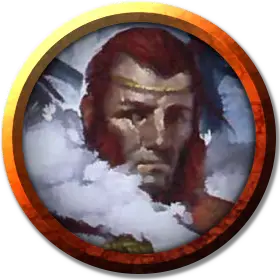

Ярунд Элькхардт
Jarund Elkhardt
Средний Гуманоид (Человек), нейтральный, именной НИП

Класс Доспеха 14 (шкурный доспех, щит)
Хиты 104 (16к8 + 32)
Скорость 30 футов
| мод | спас | ||
|---|---|---|---|
| СИЛ | 18 | +4 | +4 |
| ЛОВ | 10 | +0 | +0 |
| ТЕЛ | 15 | +2 | +5 |
| мод | спас | ||
|---|---|---|---|
| ИНТ | 12 | +1 | +1 |
| МДР | 14 | +2 | +5 |
| ХАР | 18 | +4 | +4 |
Навыки Атлетика +7, Выживание +5, Запугивание +7
Чувства пассивное Восприятие 12
Языки Общий, Дварфийский
Опасность 5 (1800 опыта)
Бонус мастерства +3
Особенности
Жестокость. Рукопашное оружие причиняет одну дополнительную кость урона своего урона, когда Ярунд попадает им (уже включено в атаку)
Действия
Мультиатака. Ярунд совершает три рукопашные атаки.
Боевой молот. Рукопашная атака оружием: +7 к попаданию, досягаемость 5 фт., одна цель. Попадание: 13 (2к8 + 4) дробящего урона или 15 (2к10 + 4) дробящего урона при использовании двумя руками.
Щит. . Рукопашная атака оружием: +7 к попаданию, досягаемость 5 фт., одно существо. Попадание: 11 (2к6 + 4) дробящего урона, и Ярунд отталкивает цель на 5 футов от себя, если она Большого размера и меньше. После этого Ярунд входит в освобождённое целью пространство. Если цель отталкивается в пространство в пределах 5 футов от существа, дружественного Ярунду, это существо может совершить атаку по цели реакцией.
Метательное копьё. Рукопашная или дальнобойная атака оружием: +7 к попаданию, досягаемость 5 фт. или дистанция 30/120 фт., одна цель. Попадание: 11 (2к6 + 4) колющего урона.
Описание
Из четырех оставшихся племен регхедских кочевников, племя Лося является самым многочисленным и наиболее терпимым к чужакам. Это также племя героя Севера Вульфгара, сына Бьёрнегара. Члены племени Лося считают жителей Десяти Городов «бесхребетным народом», дурно воспитанным и плохо приспособленным для жизни в долине Ледяного Ветра. Племя держится на расстоянии от Десяти Городов во избежание недоразумений, так как появление охотников племени Лося вблизи Десяти Городов, обычно вызывает панику у их обитателей, живущих в постоянном страхе перед нападением.
Король Ярунд Элькхардт
Король племени Лося Ярунд Элькхардт, немногословный, но внимательный к деталям гигант, которому почти пятьдесят лет — можно сказать древний старик для кочевого племени. Он возглавляет племя Лося более половины своей жизни, и с возрастом стал более осторожным в решениях. Ярунд видел, как возвышались и свергались другие короли и королевы, воевал с друзьями, мирился с врагами и вел воинов, которых знал с пеленок, на смерть в битвах. Бремя долгих лет правления навсегда запечатлелось на его обветренном лице. Поздний сын Ярунда, Ярунд Дважды Рожденный, погиб почти десять лет назад охотясь на пещерного медведя, оставив Ярунда без наследника. Ему не удалось произвести на свет ещё одного ребенка ни со своей женой Виннет, ни с любовницей Фройей, и будущее королевского рода остается неопределенным. Непрекращающаяся зима Ориль сильно беспокоит Ярунда, и он часто обращается за советом к своему шаману Мейениру. Король уважает то, что шаман понимает богов и духов, а тот факт, что оба мужчины потеряли своих сыновей, только усиливает их дружбу. Мейенир считает, что единственный способ разрушить чары Ориль — это убить богиню в ее обители, но Ярунд уверен, что его воины пока недостаточно сильны для выполнения такой задачи самостоятельно.